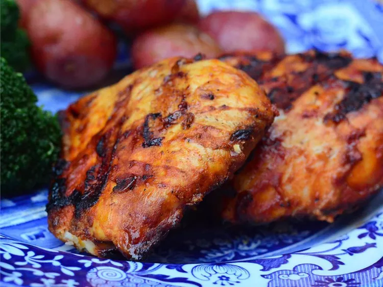

Paprika Chicken

Description
Paprika Chicken (or paprikás csirke in Hungarian) is a traditional dish from Hungarian cuisine, known for its rich and creamy paprika sauce. This chicken fricassee is made with fresh and flavorful ingredients, creating a comforting culinary experience.
ingredients
- 6 cucharadas de yogur natural
- 3 dientes de ajo machacados
- 3 cucharadas de pimentón molido
- 2 cucharadas de aceite de oliva
- 1 cucharada de pasta de chile picante (como sambal oelek)
- 1 pizca de pimienta cayena
- 1 pollo entero (5 libras) , cortado en 8 trozos
- sal
- ¼ taza de aceite de oliva
- 2 cucharadas de vinagre de jerez
- 1 cucharada de ketchup
- ⅛ cucharadita de pasta de chile picante (como sambal oelek)
- 1 pizca de pimentón
- Sal y pimienta al gusto
Directions
Step 1
- Whisk together yogurt, garlic, 3 tablespoons paprika, 2 tablespoons olive oil, 1 tablespoon hot chile paste, and cayenne pepper in a large bowl.
Step 2
- Mix in chicken pieces and toss to evenly coat. Cover the bowl with plastic wrap and marinate in the refrigerator for 3 hours.
Step 3
- Preheat an outdoor grill for medium-high heat, and lightly oil the grate.
Step 4
- Remove chicken from the bag and transfer to a plate or baking sheet lined with paper towels. Pat chicken pieces dry with more paper towels. Season with salt.
Step 5
- Combine 1/4 cup olive oil, sherry vinegar, ketchup, 1/8 teaspoon hot chile paste, pinch paprika, salt, and pepper in a small bowl. Set aside.
Step 6
- Grill chicken, skin-side down, on the preheated grill for 4 minutes with grill lid closed.
Step 7
- Turn chicken and grill with lid closed until well-browned and meat is no longer pink in the center, about 6 minutes. An instant-read thermometer inserted into the thickest part of the thigh should read 180 degrees F (82 degrees C).
Step 8
- Spoon sherry vinegar mixture over cooked chicken and serve.
Nutrition Facts
(per serving)
- Calories: 618
- Fat: 41g
- Carbs: 6
- Protein> 54g